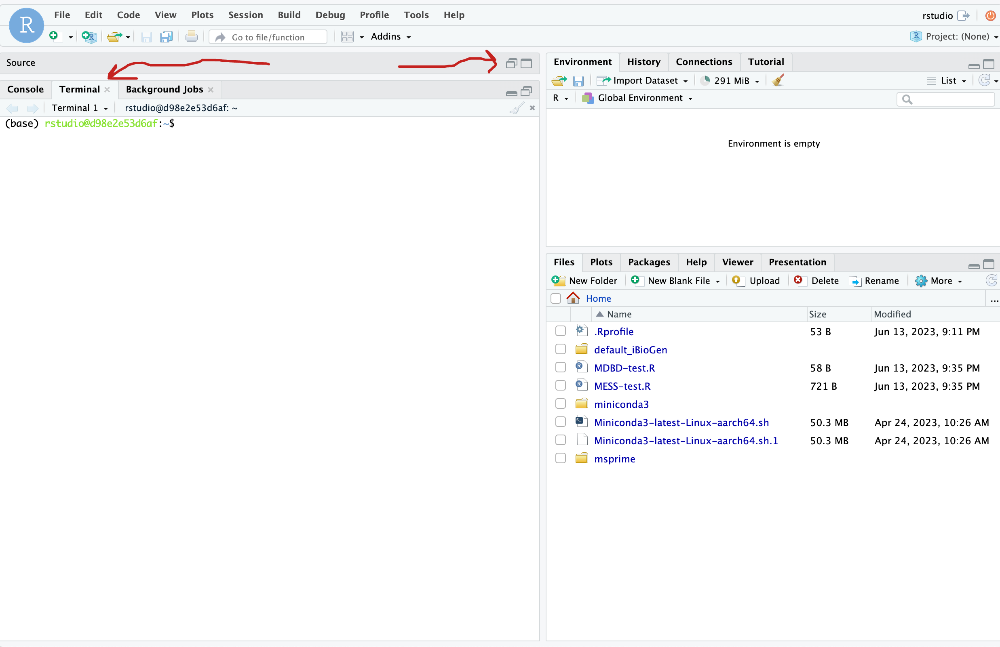
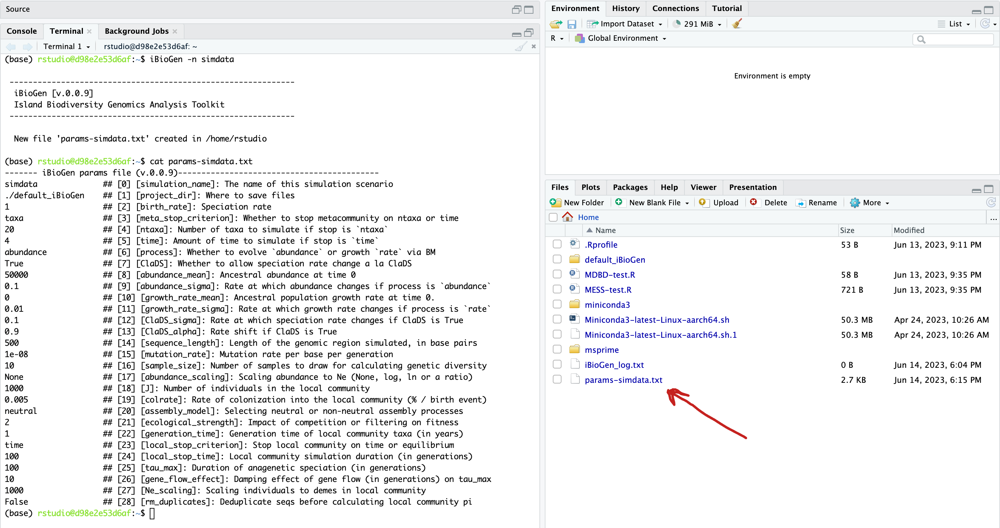
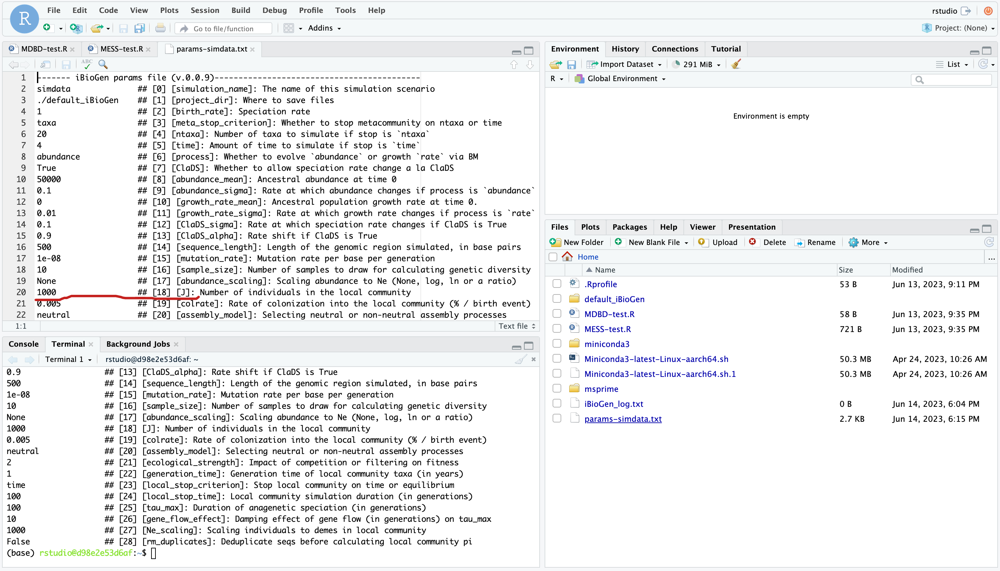

8 Getting started with the MESS model
output-dir: docs
8.1 Key questions
- How do I set up and run a MESS simulation?
- What are the inputs and outputs of MESS?
- What happens when a MESS model runs?
- How do I view and interpret the results of a MESS simulation?
8.2 Lesson objectives
After this lesson, learners should be able to…
- Describe the basic workflow of running a MESS simulation.
- Create and edit a MESS params file, including setting ranges on parameters.
- Identify the 4 most important MESS parameters
- Use the command line to run a basic MESS model.
- Describe and interpret the basic outputs of a MESS model.
8.3 Planned exercises
This is the first part of the full tutorial for the MESS model. In this tutorial we’ll focus on the command line interface (CLI), because this is the simplest way to get started, and it will also more likely be how one would run MESS on an HPC. This is meant as a broad introduction to familiarize users with the general workflow, and some of the parameters and terminology. We will use as an example in this tutorial the spider community data set from La Reunion published by Emerson et al (2017).
- Installation
- Getting started with the MESS CLI
- Creating and editing a new params file
- Run simulations using the edited params file
- Inspect the output of the simulation runs
- Setting prior ranges on parameters
- Hands-on experimentation time
8.3.1 Overview of MESS simulation and analysis workflow
The basic steps of this process are as follows:
- Step 1 - Set parameters based on prior knowledge of empirical system
- Step 2 - Run many, many simulations
- Step 3 - Use ML to infer community assembly process (neutral/competition/filtering)
- Setp 4 - Use ML to estimate key community assembly parameters
- Step 5 - ???
- Step 6 - Profit!!
8.3.2 Installing MESS
Because we are using the self-contained and pre-instaled docker image, you do not need to install anything for this workshop, rather installation instructions are included for completeness and future information should you wish to install MESS on your home cluster.
The most current implementation of the MESS model is included in the iBioGen package, which is hosted on the iBioGen github and installable either using conda or the remotes R package. Conda is the preferred method, but really either should work.
For the command line install, first install conda and then:
conda create -n iBioGen python=3.10
conda activate iBioGen
conda install -c conda-forge -c ibiogen ibiogenFor the R install:
> install.packages("remotes")
> library(remotes)
> remotes::install_github('iBioGen/iBioGen')Good question! Think of MESS as the idea or the concept and iBioGen as the implentation. It’s the same relationship between the concept/idea of a car and an actual Honda or Ford, they’re both complicated machines made of tons of small parts that do the same job in slighly different ways.
The underlying implementation of iBioGen is python, but we are also working on an implementation of MESS in R which is called roleR. roleR and iBioGen are both complicated software programs made of tons of small parts that implement the idea of the MESS model in slightly different ways. For the purpose of this workshop, because we are interested in the model and not the implementation, we will prefer to refer to it as MESS, in most cases.
8.3.3 Getting started with the MESS CLI
For this exercise we’ll be using the MESS command line interface (CLI), which just means we’ll run it like a program in a terminal. Lets start by getting our rstudio interface changed a bit to make this part easier. Start by collapsing the ‘source’ pane, and expanding the ‘console’ pane on the left, then choose the ‘terminal’ tab in the console pane.

Each grey cell in this tutorial indicates a command line interaction. Lines starting with $ indicate a command that should be executed in a terminal. All lines in code cells beginning with ## are comments and should not be copied and executed. All other lines should be interpreted as output from the issued commands.
## Example Code Cell.
## e.g. Create an empty file in my home directory called `watdo.txt`
$ touch ~/watdo.txt
## Elements in code cells surrounded by angle brackets (e.g. < > ) are
## variables that need to be replaced by the user
##
## Make a directory for your project. When YOU run this replace everything
## (angle brackets and all) with the information that is applicable to you.
$ mkdir <my_project>
## Print "wat" to the screen
$ echo "wat"
watOk, so now that you’re sitting at a command line, we’re ready to begin. To better understand how to use iBioGen to run a MESS model, let’s take a look at the help argument. We will use some of the iBioGen command line arguments in this tutorial (for example: -n, -p, -s, -c). The complete list of optional arguments and their explanation can be accessed with the -h flag (or --help:
$ iBioGen -h
usage: iBioGen [-h] [-n new] [-p params] [-s sims] [-c cores] [-f] [-v] [-q] [-d]
[--ipcluster [ipcluster]]
options:
-h, --help show this help message and exit
-n new create new file 'params-{new}.txt' in current directory
-p params path to params file simulations: params-{name}.txt
-s sims Generate specified number of simulations
-c cores number of CPU cores to use (Default=0=All)
-f force overwrite of existing data
-v do not print to stderror or stdout.
-q do not print anything ever.
-d print lots more info to iBioGen_log.txt.
--ipcluster [ipcluster]
connect to ipcluster profile
* Example command-line usage:
iBioGen -n data ## create new file called params-data.txt
iBioGen -p params-data.txt ## run iBioGen with settings in params file8.3.4 Creating and editing a new params file
iBioGen uses a text file to hold all the parameters for a given community assembly scenario. Start by creating a new parameters file with the -n flag. This flag requires you to pass in a name for your simulations. In the example we use simdata but the name can be anything at all. Once you start analysing your own data you might call your parameters file something more informative, like the name of your target community and some details on the settings.
## Make a new directory, change directory into it, and then print the working
## directory to make sure you are where you think you are.
$ mkdir MESS
$ cd MESS
$ pwd
# Create a new params file named 'simdata'
$ MESS -n simdata-------------------------------------------------------------
iBioGen [v.0.0.9]
Island Biodiversity Genomics Analysis Toolkit
-------------------------------------------------------------
New file 'params-simdata.txt' created in /home/rstudioThis will create a file in the current directory called params-simdata.txt. The params file lists on each line one parameter followed by a ## mark, then the name of the parameter, and then a short description of its purpose. Lets take a look at it.
$ cat params-simdata.txt
------- iBioGen params file (v.0.0.9)-------------------------------------------
simdata ## [0] [simulation_name]: The name of this simulation scenario
./default_iBioGen ## [1] [project_dir]: Where to save files
1 ## [2] [birth_rate]: Speciation rate
taxa ## [3] [meta_stop_criterion]: Whether to stop metacommunity on ntaxa or time
20 ## [4] [ntaxa]: Number of taxa to simulate if stop is `ntaxa`
4 ## [5] [time]: Amount of time to simulate if stop is `time`
abundance ## [6] [process]: Whether to evolve `abundance` or growth `rate` via BM
True ## [7] [ClaDS]: Whether to allow speciation rate change a la ClaDS
50000 ## [8] [abundance_mean]: Ancestral abundance at time 0
0.1 ## [9] [abundance_sigma]: Rate at which abundance changes if process is `abundance`
0 ## [10] [growth_rate_mean]: Ancestral population growth rate at time 0.
0.01 ## [11] [growth_rate_sigma]: Rate at which growth rate changes if process is `rate`
0.1 ## [12] [ClaDS_sigma]: Rate at which speciation rate changes if ClaDS is True
0.9 ## [13] [ClaDS_alpha]: Rate shift if ClaDS is True
500 ## [14] [sequence_length]: Length of the genomic region simulated, in base pairs
1e-08 ## [15] [mutation_rate]: Mutation rate per base per generation
10 ## [16] [sample_size]: Number of samples to draw for calculating genetic diversity
None ## [17] [abundance_scaling]: Scaling abundance to Ne (None, log, ln or a ratio)
1000 ## [18] [J]: Number of individuals in the local community
0.005 ## [19] [colrate]: Rate of colonization into the local community (% / birth event)
neutral ## [20] [assembly_model]: Selecting neutral or non-neutral assembly processes
2 ## [21] [ecological_strength]: Impact of competition or filtering on fitness
1 ## [22] [generation_time]: Generation time of local community taxa (in years)
time ## [23] [local_stop_criterion]: Stop local community on time or equilibrium
100 ## [24] [local_stop_time]: Local community simulation duration (in generations)
100 ## [25] [tau_max]: Duration of anagenetic speciation (in generations)
10 ## [26] [gene_flow_effect]: Damping effect of gene flow (in generations) on tau_max
1000 ## [27] [Ne_scaling]: Scaling individuals to demes in local community
False ## [28] [rm_duplicates]: Deduplicate seqs before calculating local community piGreat question! What’s the difference between a CLI argument and a MESS params file parameter, you may be asking yourself? Well, MESS CLI arguments specify how the simulations are performed (e.g. how many to run, how many cores to use, whether to print debugging information, etc), whereas MESS params file parameters dictate the structure of the simulations to run (e.g. sizes of communities, migration rates, specation rates, etc).
The defaults in the params file are all values of moderate size that will generate ‘normal’ looking simulations, and we won’t mess with them for now, but lets just change a couple parameters to get the hang of it. Let’s set J (the # of individuals in the local community)) equal to 500 as this will speed up the simulations (smaller local communities reach equilibrium faster).
We will use the text editor built into Rstudio to modify params-simdata.txt and change this parameter:


Don’t forget to File->Save after editing your params file! Now you’re ready to run some MESS simulations!
8.3.5 Run simulations using the edited params file
The two most important arguments for the iBioGen command when running simulations are -p which specifies the params file to use, and -s which determines the number of simulations to run.
## Run 10 simulations using our new params file
$ iBioGen -p params-simdata.txt -s 10
-------------------------------------------------------------
iBioGen [v.0.0.9]
Island Biodiversity Genomics Analysis Toolkit
-------------------------------------------------------------
Parallelization disabled.
Generating 10 simulation(s).
[####################] 100% Finished 10 simulations in 0:00:01|This is the simplest possible iBioGen command that will run simulations. It works great for 10 simulations, but typically you’ll need to perform 10 thousand or 10 million simulations, so this approach of generating them one at a time (in serial) is woafully time-consuming. 10x more simulations takes on the order of 10x more wall time:
## Run 100 simulations with our new params file
$ iBioGen -p params-simdata.txt -s 100
-------------------------------------------------------------
iBioGen [v.0.0.9]
Island Biodiversity Genomics Analysis Toolkit
-------------------------------------------------------------
Parallelization disabled.
Generating 100 simulation(s).
[####################] 100% Finished 100 simulations in 0:00:17To facilitate massive parallelization, the iBioGen CLI provides a parallel computing option which will intelligently handle all the parallelization work for you. When invoked with the -c flag, iBioGen portions out simulations among all the cores as they become available.
## Run 100 simulations split across 5 cores
$ iBioGen -p params-simdata.txt -s 100 -c 5
-------------------------------------------------------------
iBioGen [v.0.0.9]
Island Biodiversity Genomics Analysis Toolkit
-------------------------------------------------------------
establishing parallel connection:
host compute node: [5 cores] on d98e2e53d6af
Generating 100 simulation(s).
[####################] 100% Finished 100 simulations in 0:00:05 -c flag is great! Why don’t I put -c 100, it’s going to go so fast!
Ummmm, that’s not really how it works, but I appreciate your enthusiasm. While you very well can use -c 100 and it will definitely do what you say and spin up 100 parallel workers, it will not increase the number of actual cpu cores on your computer. In CLI mode the number of -c cores should never exceed the number of cpu cores on your computer, or else you’ll actually reduce performance, because the parallel workers will all be competing for the (limited) cpu resources.
8.3.6 Inspect the output of the simulation runs
8.3.7 Setting prior ranges on parameters
8.3.8 Hands-on experimentation: Exploring MESS model behavior with the CLI
(set a challenge and report back)
8.4 Key points
- What is the relationship between MESS, RoLE, and iBioGen?